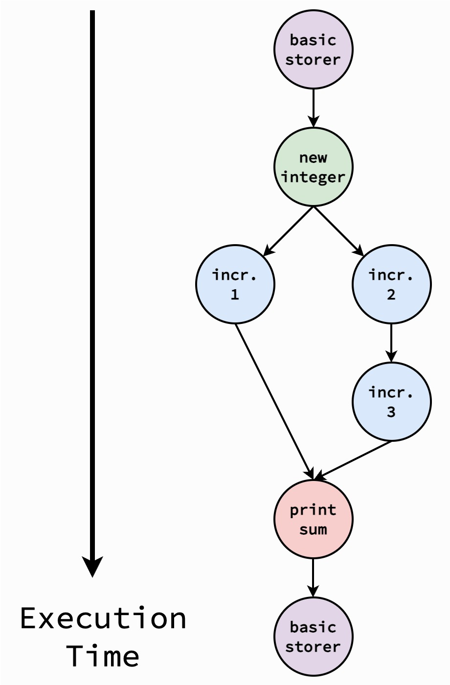

Tutorial
This tutorial will walk you through using the framework. You’ll gain experience building a flow completely, configuring the flow, and then swapping out steps for ones of your own design!
Tutorial Actions
You will see cards similar to this one throughout the tutorial. These indicate actions that you should take as part of the tutorial
The tutorial assumes that you have already completed all of the local setup. No API key setup is required.
Building a Flow
We’ll get started by building a basic flow. courseflow has
implemented “basic” steps (in utils.basic_steps) for this purpose,
to serve as minimal examples as to what each step needs to do. These may
also be useful later to reference when building your own steps!
Starting our Python script
Let’s start our flow by importing the different steps we’ll need. For this tutorial, we’ll be using:
A few steps from
utils.basic_steps`The main
FlowclassA helper function
run_flow(), which runs our flow as a program, and provides argument parsing to interact with the flow
Open up a new Python file using your preferred code editor, named
basic_flow.py, and put the following imports at the top:
from utils.basic_steps import (
BasicRecordStorer,
BasicRecordStep,
BasicUpdateStep,
BasicPropagateStep,
)
from flow.flow import Flow
from flow.run_flow import run_flow
Overall Flow and Record Storer
The first thing to do is to construct a Flow. Each
flow needs a RecordStorer; for this
tutorial, we’ll use BasicRecordStorer,
which stores integers in a file
Instantiating a Flow
Let’s create a flow! In basic_flow.py, instantiate a flow as
basic_flow like the following:
basic_flow = Flow(
name="basic-flow",
description="A basic flow to access and manipulate integer records",
record_storer_type=BasicRecordStorer,
record_storer_name="basic-storer",
)
Here, we’re specifying:
The new flow is named
basic-flowThe flow’s high-level description is to access and manipulate integers
The flow’s record storer is a
BasicRecordStorer, given the namebasic-storer
Note that a Flow needs to know what type of
records it operates on; it’s generic across record types, seen in the
documentation as RecordType. Here, the flow can figure out that it
operates on integers based on that
BasicRecordStorer
can only operate on integers, but explicitly specifying the type of
records using the following syntax would also be valid:
basic_flow = Flow[int](
name="basic-flow",
description="A basic flow to access and manipulate integer records",
record_storer_type=BasicRecordStorer,
record_storer_name="basic-storer",
)
Adding a Record Step
The first step in a flow is a FlowRecordStep.
For this tutorial, we’ll use
BasicRecordStep to supply records. This
record step always appends a new integer record (random between 0 and 10)
to the list of records.
Adding a BasicRecordStep
To add this step to your flow, use the
add_record_step() method of the flow. Add the
following to basic_flow.py to add an instance of this step named
new-integer:
basic_flow.add_record_step("new-integer", BasicRecordStep)
Matching Record Types:
Here, notice that BasicRecordStep
operates on int records, the same as the overall flow. If these
didn’t match, our linter would throw an error during type-checking.
The same goes for all other steps that we add.
Adding an Update Step
Next, we can add a FlowUpdateStep.
For this tutorial, we’ll use
BasicUpdateStep to update records. This
update step increments each record by a configurable amount.
Adding two BasicUpdateStep
Let’s add two of these steps to the flow! We’ll do this using the
add_update_step() method of the flow.
Add the following to basic_flow.py to add two instances of
BasicUpdateStep, named
increment-1 and increment-2
basic_flow.add_update_step("increment-1", BasicUpdateStep)
basic_flow.add_update_step("increment-2", BasicUpdateStep)
We can also use this opportunity to specify dependencies between steps.
add_update_step() supports an additional
parameter, depends_on, to specify the names of steps that the new
step depends on. The new step will only be run after the steps it depends
on have completed
Adding a dependent BasicUpdateStep
Let’s add another BasicUpdateStep to
the flow (named increment-3), and have it depend on
increment-2. Do this by adding the following to basic_flow.py:
basic_flow.add_update_step(
"increment-3", BasicUpdateStep, depends_on=["increment-2"]
)
Adding a Propagate Step
Lastly, we can add a FlowPropagateStep
to the flow. For this tutorial, we’ll
use BasicPropagateStep, which logs the sum
of all of the records.
Adding a BasicPropagateStep
To add this step to the flow, use the
add_propagate_step() method of the flow.
Add the following to basic_flow.py to add an instance of
BasicPropagateStep, named
print-sum:
basic_flow.add_propagate_step("print-sum", BasicPropagateStep)
Note that add_propagate_step() also supports
an optional depends_on parameter, although we don’t use it here.
With this, our flow is complete! The diagram below visualizes the dependencies in our flow, indicating how it might execute over time:
{kind=link}
While the flow is just an object, we can use the
run_flow() helper function as a wrapper
to run the flow.
Making a flow a program
Add the following to use the run_flow() helper
function to run the flow when basic_flow.py is used as a main
script:
if __name__ == "__main__":
run_flow(basic_flow)
basic_flow.py is now complete; however, to be able to run, we still must
specify configurations for the flow.
A main program with run_flow()
Even though we can’t run the flow itself, we can still see the ways
that run_flow() allows us to interact with
a flow. Run the following command from a terminal in the same directory
as basic_flow.py to see the possible arguments:
python basic_flow.py -h
Configuring the Flow
The easiest way to determine what configurations a flow needs, it’s
easiest to have the flow describe its expected configurations with the
describe_config() method.
run_flow() allows us to dump these in a YAML
format with the --dump flag.
Dumping expected configurations
Run the following command from a terminal in the same directory
as basic_flow.py to dump the expected configurations to
a file named basic_flow_configs.yaml:
python basic_flow.py --dump basic_flow_configs.yaml
Opening the YAML file, you shoudl find configurations similar to those shown below. The only difference should be the formatting; the raw YAML output may not be grouped intuitively, unlike the example below. Grouping the configurations intuitively is often useful.
# ========================================================================
# Basic Flow Configurations
# ========================================================================
_description: A basic flow to access and manipulate integer records
num_threads: (int) The number of threads to use when running update and propagate
steps
# ------------------------------------------------------------------------
# Step Modes
# ------------------------------------------------------------------------
basic-storer-mode: (str) The mode to run basic-storer in (either 'include' or 'debug')
new-integer-mode: (str) The mode to run increment-1 in (either 'include', 'exclude',
or 'debug')
increment-1-mode: (str) The mode to run increment-1 in (either 'include', 'exclude',
or 'debug')
increment-2-mode: (str) The mode to run increment-1 in (either 'include', 'exclude',
or 'debug')
increment-3-mode: (str) The mode to run increment-1 in (either 'include', 'exclude',
or 'debug')
print-sum-mode: (str) The mode to run increment-1 in (either 'include', 'exclude',
or 'debug')
# ------------------------------------------------------------------------
# RecordStorer
# ------------------------------------------------------------------------
basic-storer:
_description: A basic record storer that stores integers in a file.
file_path: (str) The path to a file to store records
# ------------------------------------------------------------------------
# FlowRecordStep
# ------------------------------------------------------------------------
new-integer:
_description: A basic flow record step to add a (changing) new record.
# ------------------------------------------------------------------------
# FlowUpdateStep
# ------------------------------------------------------------------------
increment-1:
_description: A basic flow update step to increment all records
increment: (int) The amount to increment by
increment-2:
_description: A basic flow update step to increment all records
increment: (int) The amount to increment by
increment-3:
_description: A basic flow update step to increment all records
increment: (int) The amount to increment by
# ------------------------------------------------------------------------
# FlowPropagateStep
# ------------------------------------------------------------------------
print-sum:
_description: A basic flow propagate step to log the sum of all records
Here, we can see a few elements of the configurations:
A
num_threadsconfiguration, indicating how many threads to run update and propagate steps in parallel withAn entry for each step that has been added to the flow, which includes any configurations that the steps need
In addition to the above, you’ll see elements named _description; these
are the high-level descriptions of the flow and each step. These are used
as a workaround to provide comments in the YAML file. While it may be
useful to keep these to describe the configuration, they aren’t necessary,
and can be deleted as long as each step is still present and has at least
one element in the configuration.
Each configuration is pre-filled with a description of what should go in that entry. To configure the design, replace these entries with your desired configurations.
Configuring the flow
Using your preferred code editor, replace the configurations in
basic_flow_configs.yaml as appropriate to configure the flow. An
example is provided below
# ========================================================================
# Basic Flow Configurations
# ========================================================================
_description: A basic flow to access and manipulate integer records
num_threads: 4
# ------------------------------------------------------------------------
# Step Modes
# ------------------------------------------------------------------------
basic-storer-mode: include
new-integer-mode: include
increment-1-mode: include
increment-2-mode: include
increment-3-mode: include
print-sum-mode: include
# ------------------------------------------------------------------------
# RecordStorer
# ------------------------------------------------------------------------
basic-storer:
_description: A basic record storer that stores integers in a file.
file_path: ./basic-flow-records.txt
# ------------------------------------------------------------------------
# FlowRecordStep
# ------------------------------------------------------------------------
new-integer:
_description: A basic flow record step to add a (changing) new record.
# ------------------------------------------------------------------------
# FlowUpdateStep
# ------------------------------------------------------------------------
increment-1:
_description: A basic flow record step to increment all records
increment: 1
increment-2:
_description: A basic flow record step to increment all records
increment: 2
increment-3:
_description: A basic flow record step to increment all records
increment: 3
# ------------------------------------------------------------------------
# FlowPropagateStep
# ------------------------------------------------------------------------
print-sum:
_description: A basic flow record step to log the sum of all records
Once the flow has configurations, we can do one of two things:
A flow can be validated with given configurations. This constructs the flow with the given configurations, and checks that all necessary configurations are present and of the correct type (but does not actually run the flow). If you’re ever curious whether your configurations will work, you can try validating the flow with them.
A flow can be run with given configurations. This constructs and runs the flow with the configurations. In general, a flow should be validated with configurations before it is run with them (although running a flow will also first check that the configurations are valid)
Validating and running a flow
run_flow() allows us to validate or run a
flow with the --validate and --run flags, respectively. First,
validate the flow with our new configurations by running the following
command in a terminal in the same directory:
python basic_flow.py --validate basic_flow_configs.yaml
This should display Validated, ready to deploy! if the
configurations are valid; otherwise, it will tell you what the issues
are. Try removing some configurations, or providing an invalid
configuration (negative increment, incorrect type), and re-run the
above command; what do you get?
Once your configurations are validated, you can run the flow with the following command:
python basic_flow.py --run basic_flow_configs.yaml
This should provide logging output of what the flow is doing, and create/update the configured file to store integer records. You’ve just run your first flow!
Once you’ve run the flow, feel free to run the flow multiple times to
see how the behavior changes, or experiment with the other flags that
run_flow() offers. You can also try modifying
the flow configurations to see how they change the flow’s
functionality, including the mode that each step is run in.
Implementing New Steps
While the existing steps are a great start, users will often want to implement their own steps for their own needs. This involves:
Consulting the documentation to see what a step needs to implement
Implementing the step
(Recommended) Linting to ensure type safety. This likely requires in-place modifications to the library
Creating a new propagation step
For this tutorial, we’ll be creating a new
FlowPropagateStep class named
MyPropagateStep. You can click on
FlowPropagateStep to jump to its
documentation. Take note that we’ll need to implement
A description of the step
Any configurations the step needs
A
validate()method to check the step’s configurationsA
propagate_records()method to perform the step
For this tutorial, MyPropagateStep will log an ASCII representation of
the records. Specifically, it will (without modifying the overall record
list):
Take the modulus of each record to have it be on the range 0 - 93, and then add 33 to get a number on the range 33 - 126 (the range of visible ASCII character values)
Use
chr()to convert the record into a characterLog the string of characters for all records in-order
Furthermore, to restrict the characters we use, the modulus
should be configurable. MyPropagationStep should take in a configuration
modulus (an int) that is the modulus we take for each record above.
MyPropagationStep.validate() should check that this value is positive
and less than 95, so that we don’t run into issues with conversion.
Lastly, in the main propagate_records function, MyPropagateStep should
use the provided logger to log the resulting string. If debug is true,
the step should also log the conversion it performs on each record as it
does them.
Implementing MyPropagateStep
Using the information above, as well as referencing the
FlowPropagateStep documentation, see if
you can implement MyPropagateStep!
A key part is getting the syntax right when declaring the class; this
may be tricky for programmers who haven’t used generic classes before.
MyPropagateStep implements/inherits from a
FlowPropagateStep that operates on int
records; since FlowPropagateStep is
generic across the record type, we specify this using brackets. Add
the following at the top of basic_flow.py to import the
FlowPropagateStep class (as well as other
necessary classes), and start your definition of MyPropagateStep:
from flow.flow_steps import FlowPropagateStep
from threading import Lock
from typing import Any, Callable
...
class MyPropagateStep(FlowPropagateStep[int]):
"""A flow propagate step to log an ASCII representation of records."""
# Define the description of the step
# Define the config_types of the step
def validate(self: "MyPropagateStep") -> None:
"""Validate the configurations for the step."""
# Implement the `validate` function
def propagate_records(
self: "MyPropagateStep",
records: list[tuple[int, Lock]],
logger: Callable[[str], None],
get_metadata: Callable[[str], Any],
set_metadata: Callable[[str, Any], None],
debug: bool = False,
) -> None:
"""Log the ASCII representation of records.
Args:
curr_records (list[tuple[int, Lock]]): The current list of records
logger (Callable[[str], None]): A function to log data
get_metadata (Callable[[str], Any]): A function to get flow
metadata
set_metadata (Callable[[str, Any], None]): A function to get
flow metadata
debug (bool, optional): Whether to run in debug. Defaults to
False.
Returns:
list[int]: The new list of records
"""
# Implement the `propagate_records` function
The trickiest portion will likely be propagate_records; this is
where the main functionality comes in. Recall that the step should
iterate over the record list, and acquire the lock for any particular
record before accessing it. A common programming pattern for this is
shown below:
for record, lock in records:
with lock:
# Perform functionality
With this in mind, update basic_flow.py with an implementation of
MyPropagateStep. Once you’re done, you can also check it against
the reference implementation below. If you’re familiar with type
annotations in Python, feel free to include them as well, although they
aren’t the focus of this tutorial.
class MyPropagateStep(FlowPropagateStep[int]):
"""A flow propagate step to log an ASCII representation of records."""
description = (
"A flow propagate step to log an ASCII representation of records."
)
config_types = [("modulus", int, "The modulus to perform on records")]
def validate(self: "MyPropagateStep") -> None:
"""Validate the configurations for the step."""
if self.configs.modulus < 0 or self.configs.modulus >= 95:
raise Exception(f"Invalid modulus: {self.configs.modulus}")
def propagate_records(
self: "MyPropagateStep",
records: list[tuple[int, Lock]],
logger: Callable[[str], None],
get_metadata: Callable[[str], Any],
set_metadata: Callable[[str, Any], None],
debug: bool = False,
) -> None:
"""Log the ASCII representation of records.
Args:
curr_records (list[tuple[int, Lock]]): The current list of records
logger (Callable[[str], None]): A function to log data
get_metadata (Callable[[str], Any]): A function to get flow
metadata
set_metadata (Callable[[str, Any], None]): A function to get
flow metadata
debug (bool, optional): Whether to run in debug. Defaults to
False.
Returns:
list[int]: The new list of records
"""
ascii_repr = ""
for record, lock in records:
with lock:
record_char = chr((record % self.configs.modulus) + 33)
if debug:
logger(f"DEBUG: Adding {record} -> {record_char}...")
ascii_repr += record_char
logger(f"ASCII Representation: {ascii_repr}")
Once MyPropagateStep has been implemented, we can use it in our flow!
Implementing MyPropagateStep
Replace BasicPropagateStep with MyPropagateStep in our flow by
changing the class we add to the flow with
add_propagate_step(). Change the name for this
step from print-sum to print-ascii (both in the flow and
configurations). Finally, modify the configurations to provide a
modulus configuration to the print-ascii step, then validate
and run the flow as before. What output do you get?
Adding a Flow to a Flow Manager
The last thing you may wish to do is to add our newly-created
Flow to a FlowManager,
to run it on a pre-determined schedule. We can re-use our implementation of
basic-flow, and start our new FlowManager
in another file
Starting basic_flow_manager
Using your preferred code editor, open a new Python file named
basic_flow_manager.py in the same directory as basic_flow.py,
and add the following imports to start our file:
from basic_flow import basic_flow # Our flow from before
from flow.flow_manager import FlowManager # The flow manager
from flow.schedule import Always # A schedule to run our flow
From here, we can create a FlowManager,
naming it basic_flow_manager, by adding the following line (noting
that 4 processes should be used to run flows in parallel):
basic_flow_manager = FlowManager(num_processes=4)
Flows can be added either already configured (with
add_conf_flow()) or without
configurations (with add_unconf_flow()).
For this tutorial, we’ll add basic_flow as unconfigured (since we haven’t
called config() yet)
Adding basic_flow
We can add basic_flow to basic_flow_manager with the following
line (using the Always schedule to indicate
that basic_flow should be run whenever basic_flow_manager is run).
This additionally tells basic_flow_manager which configuration file
to use to configure basic_flow, as well as that we want to have the
terminal show the output of basic_flow when it runs.
basic_flow_manager.add_unconf_flow(
basic_flow, Always(), "./configs/basic-flow-configs.yaml", silent=False
)
The last step is to run the FlowManager with the
run() method
Running basic_flow_manager
Finish basic_flow_manager.py by adding the following line to run
basic_flow_manager:
basic_flow_manager.run()
From here, we can run the flow as a normal Python file:
python basic_flow_manager.py
This should run basic_flow according to the Always schedule, and
should produce very similar output to basic_flow.py